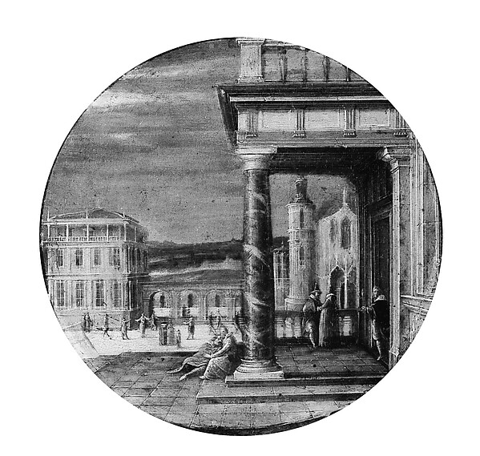
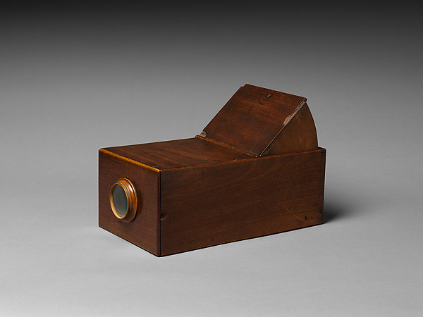
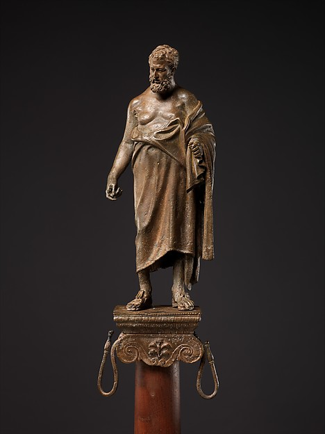
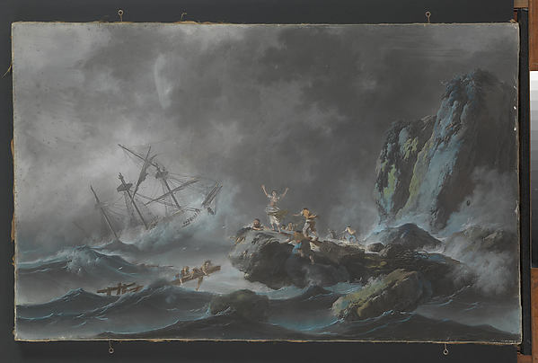
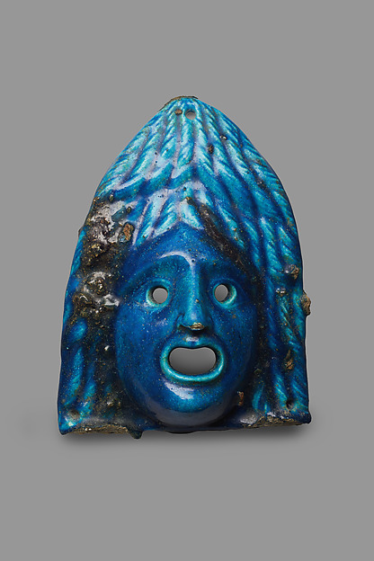
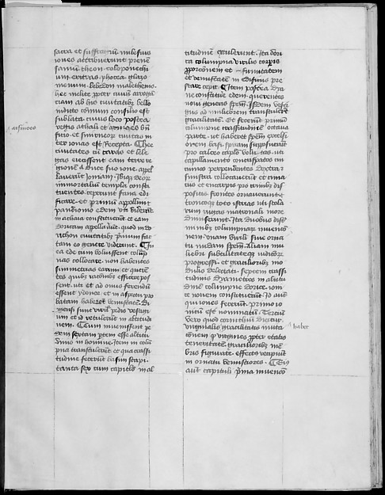
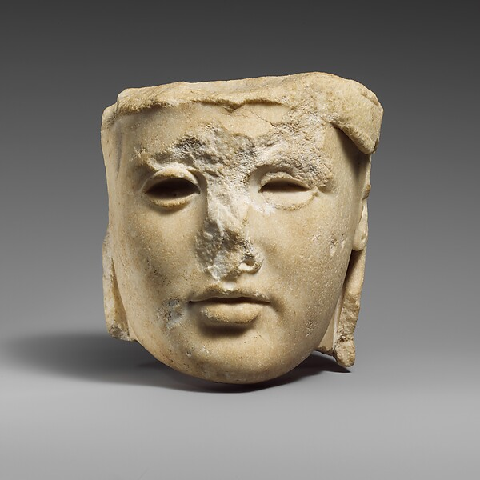
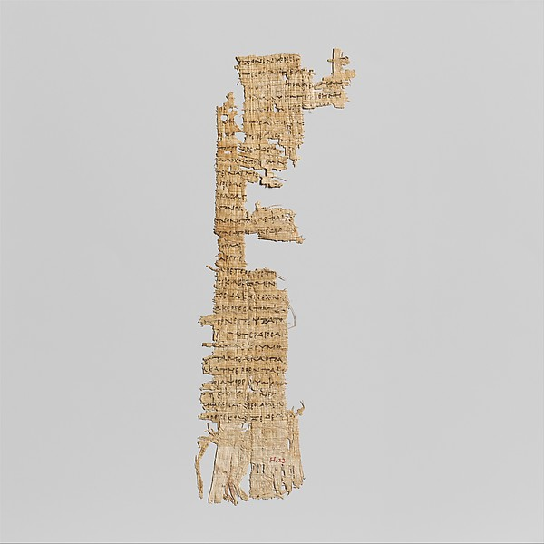
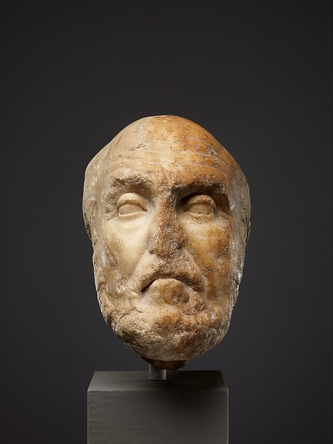
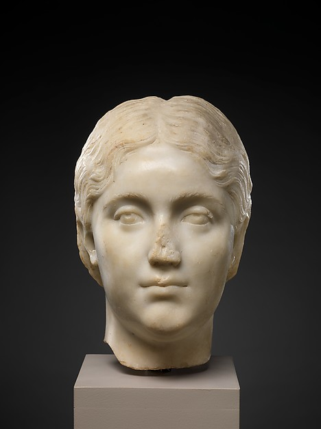

INSERISCI LA CURIOSITÀ · PREMI PER INIZIARE
Scegli il tuo
prossimo livello.
Dieci quiz originali: idee, storia, parole e personaggi. Scegli un percorso, rispondi a otto domande e scopri un profilo narrativo costruito sulle tue scelte.
ESPLORA I QUIZ
SELEZIONA UNA CARTUCCIA
La sala giochi

01OCCHIO ALL’INDIZIOUmano o AI?Allena lo sguardo, dichiara la tua confidenza.
02MODALITÀ ESPLORAZIONEChe tipo di mente hai?Scopri strategie, curiosità e tensioni.
03SFIDA COOPERATIVASopravviveresti all’apocalisse?Le scelte contano più dell’eroismo.
04SCENA FINALEChe villain saresti?Firma originale, difetto compreso.
05MACCHINA DEL TEMPOIn quale epoca saresti nato?Un contesto storico, con i suoi compromessi.
06MITOLOGIA · NON BIOGRAFIAQuale dio greco sei?Virtù, ambivalenze e varianti del mito.
07UNA PAROLA, MOLTE SFUMATUREChe parola latina sei?Etimologia e significato nel contesto.
08DOMANDE PIÙ CHE ETICHETTEQuale filosofo ti somiglia?Un’affinità ragionata, non un test scientifico.
09STORIA · SCELTE E CONSEGUENZEQuale personaggio antico saresti?Leadership e contesto, senza mitizzare la conquista. 10ORIENTAMENTO · NON UN VERDETTODovresti scegliere il Classico?Spunti per parlarne con studenti e docenti.